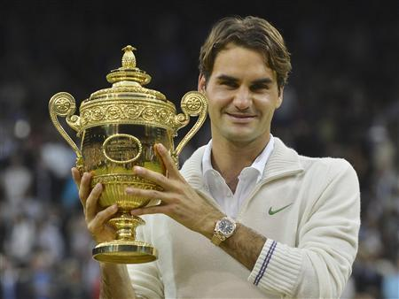
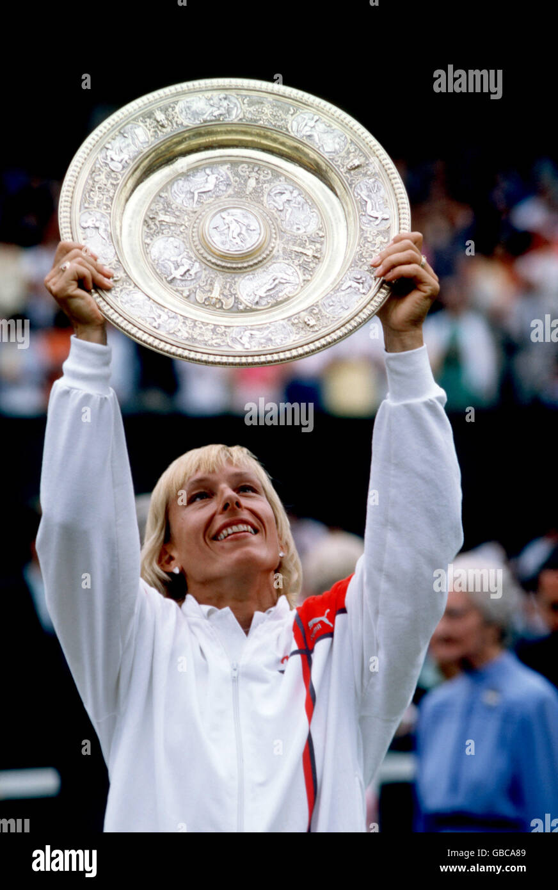

WIMBLEDON
Place
: London
Surface
: Grass
Website
:
Center Court
: Center Court
Some facts...
Wimbledon is the oldest grand slam tournament (founded in 1877). It takes place during the month of July.
Every competing player must play with white outfits.
Winners don't keep their trophies (but rather a replica) as they are kept at the All England Club's Museum.
It's the only grand slam event played on grass courts
Most titles:
Men's tennis
: Roger Federer

Women's tennis
: Martina Navratilova

Here you can watch my selection of some memorable matches in Wimbledon :